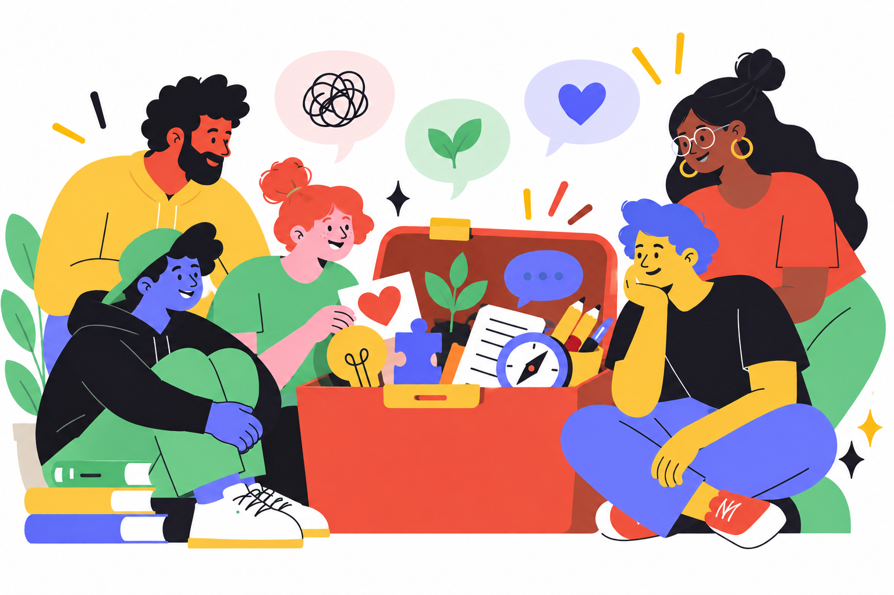
Caixa d'eines: Adolescència Mode ON
Un espai per entendre millor què viuen els fills i filles a l'adolescència i acompanyar-los amb més calma.
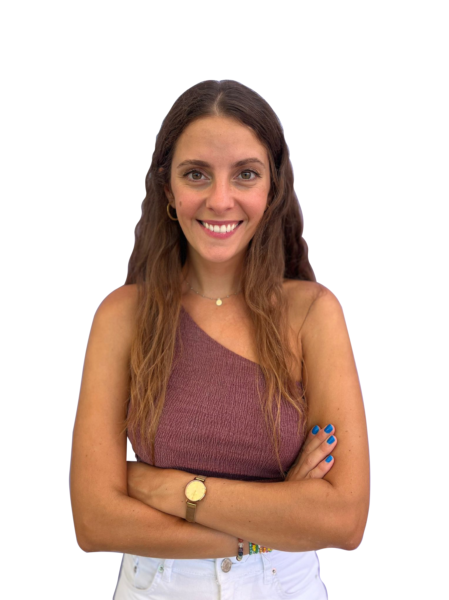
Soc la Griselda, psicòloga infantil i juvenil, docent i formadora.
Em dedico a crear espais que promouen el benestar emocional d'infants, adolescents i les seves famílies, convençuda que comprendre el que ens passa és el primer pas per poder-ho transformar.
Actualment compagino l'acompanyament psicològic a la Universitat de Girona amb la docència i l'orientació a secundària. També dissenyo i imparteixo tallers i formacions sobre habilitats parentals positives, addiccions a les pantalles, adolescència, sexualitat, neurodiversitat i altres temes relacionats amb el desenvolupament.
Entenc l'educació com una de les eines més potents per promoure el benestar emocional. Per mi, educar també és cuidar. Quan famílies, adolescents i professionals comparteixen un mateix llenguatge, és molt més fàcil generar canvis que perdurin en el temps.
Fora de la feina, la natura és el meu refugi. Veure l'horitzó, caminar amb el meu husky i regalar-me espais amb la meva gent em permet reconnectar amb mi mateixa i continuar cultivant la curiositat i la sensibilitat que també donen sentit a la meva manera d'acompanyar els altres.
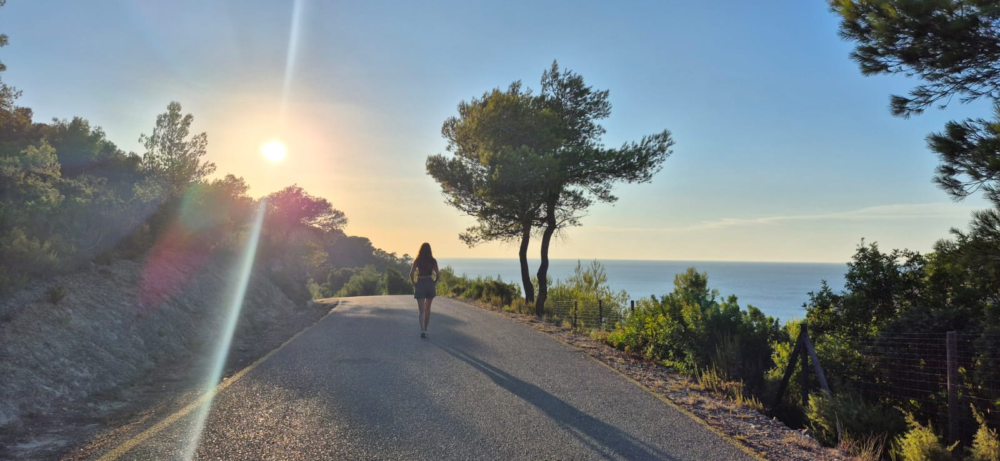
Entenc l'educació com una de les eines més potents per promoure el benestar emocional.
Quan comprenem el que ens passa, podem relacionar-nos amb més calma, confiança i benestar.
Per això, els meus projectes parteixen sempre d'una mirada preventiva, propera i participativa.
No busco donar eines. Busco generar espais que ajudin les persones a trobar els seus propis recursos.
Parlem-neDissenyo i imparteixo tallers i formacions adaptats a famílies i adolescents, i col·laboro com a formadora en projectes de prevenció com Tallers Connecta. Cada fitxa té més informació i un accés directe per contractar-la.

Un espai per entendre millor què viuen els fills i filles a l'adolescència i acompanyar-los amb més calma.
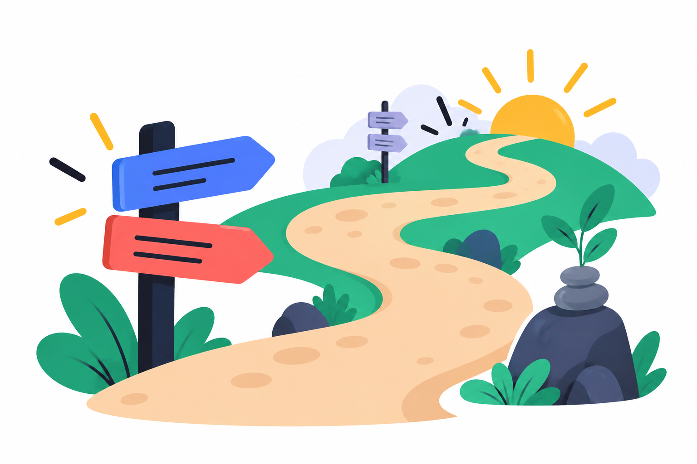
Programa de dues sessions (Entendre i Acompanyar) amb pautes per comunicar-se amb més proximitat i posar límits amb respecte.
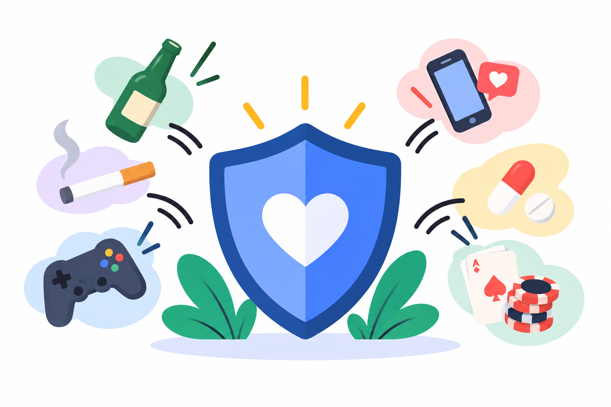
Amb Sergi Garcia i Ariadna Busqué. Estratègies per obrir converses honestes sobre addiccions amb fills i filles adolescents.
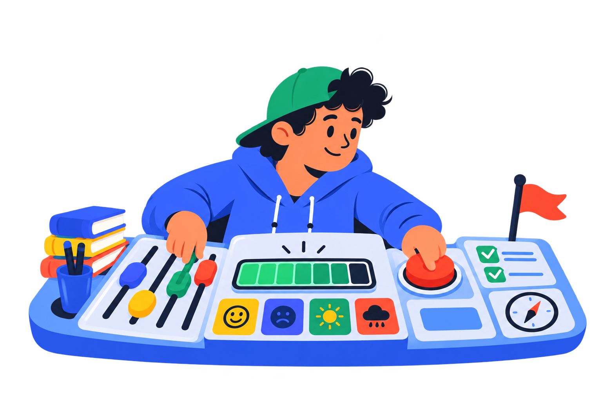
Un espai per explorar què passa "per dins" durant l'adolescència.
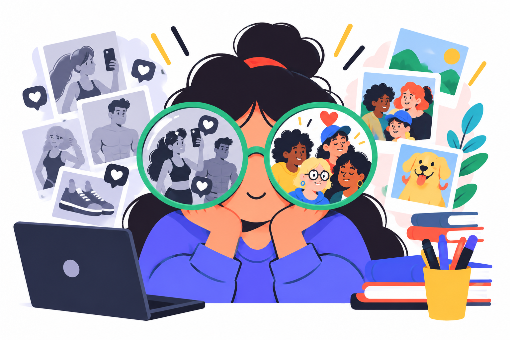
Un taller col·laboratiu per aprendre a mirar-nos i mirar els altres amb més consciència.
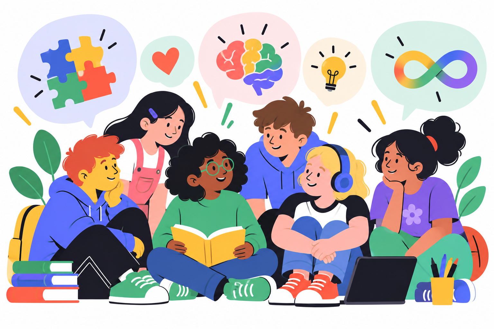
Claus per entendre i acompanyar la neurodiversitat a l'aula.
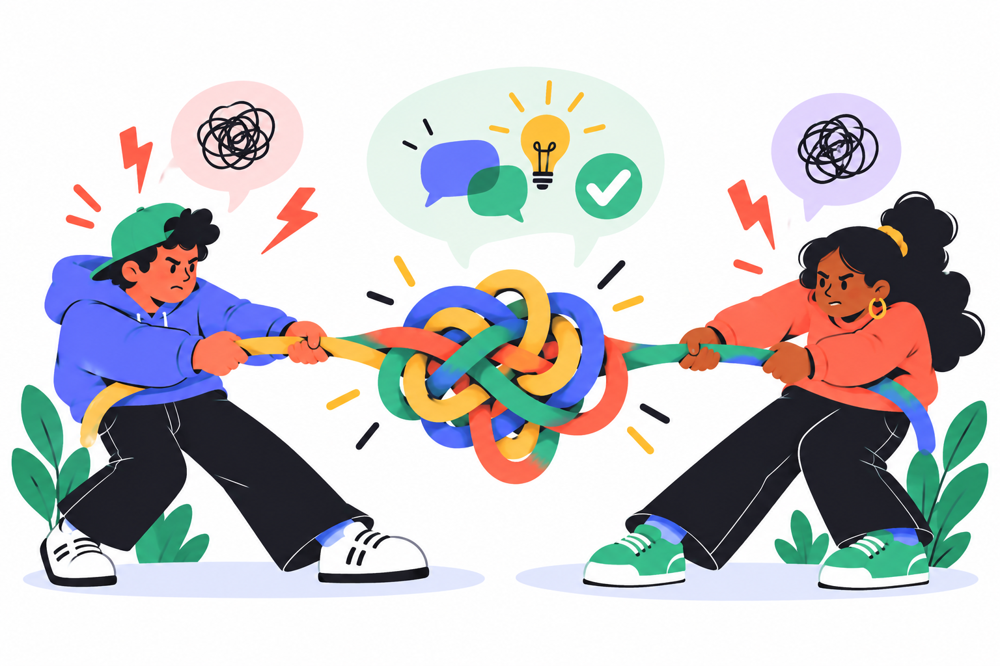
Eines pràctiques per gestionar i resoldre conflictes de manera constructiva.
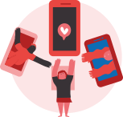
Un taller sobre com gestionar la pressió social entorn del primer mòbil.
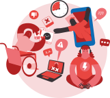
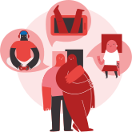
Una mirada positiva i propera a l'adolescència, per a mares i pares.
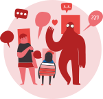
Tallers i formacions adaptades a les necessitats de cada centre.
Espais de reflexió i aprenentatge per acompanyar la criança i l'adolescència.
Programes i accions preventives adaptades a la realitat de cada municipi.
Tallers i formacions per promoure el benestar emocional de les persones i les comunitats.
Acompanyament i formació per afavorir la comunicació, la inclusió i el benestar dins dels equips.
Si vols organitzar un taller, una formació o simplement vols fer-me arribar una consulta, escriu-me i et respondré el més aviat possible.